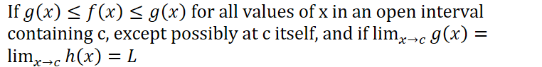
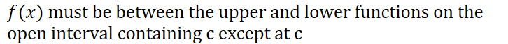
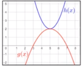
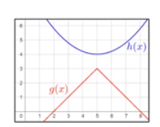

The function will be "squeezed" between the lower and upper function as they are both approaching the same values
Conditions

The upper and lower functions must approach exactly the same value at c
Example:
Two parabolas

The squeeze theorem does not apply to this:

Because at